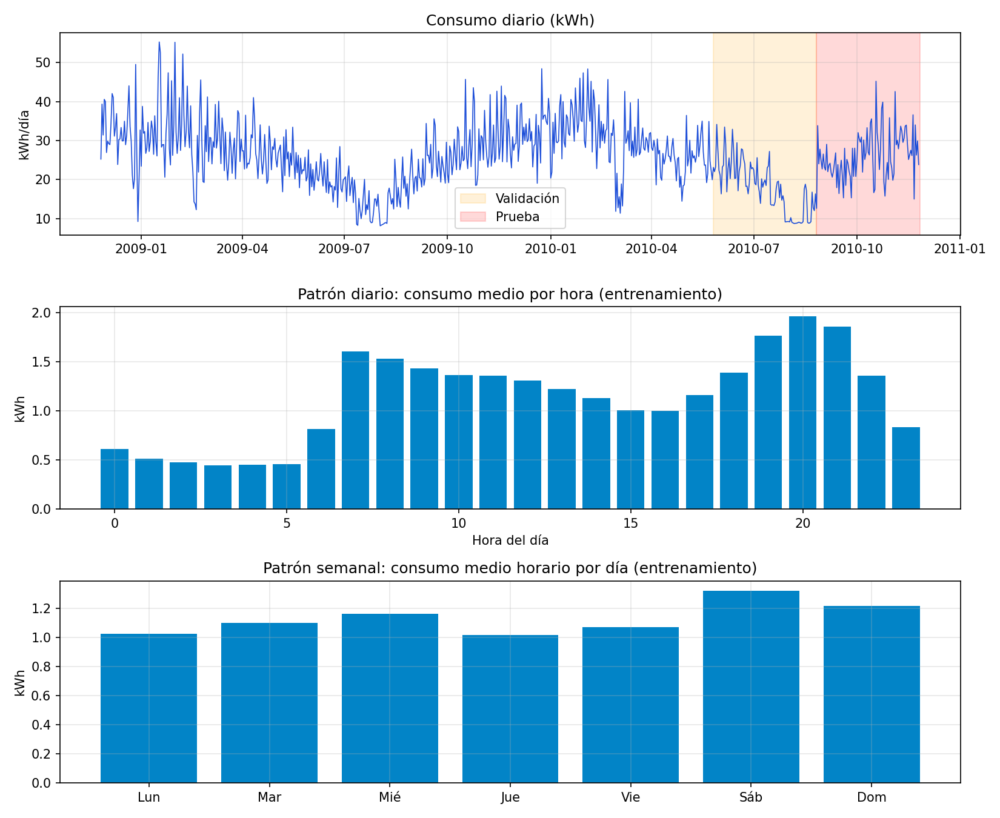
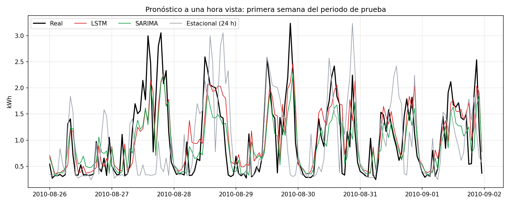
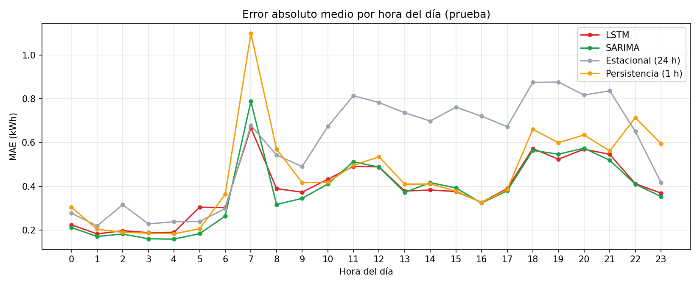
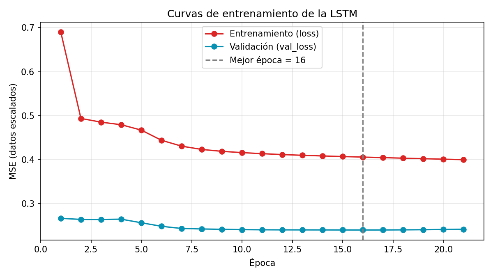
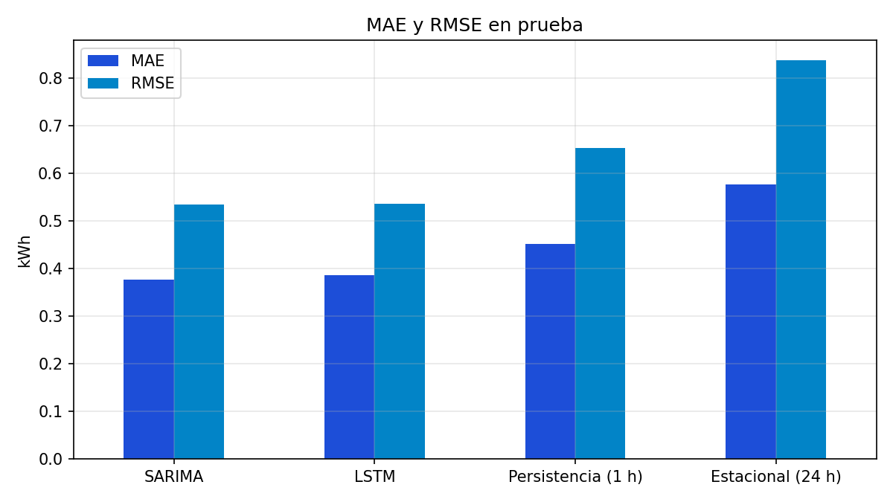

Predicción del consumo eléctrico de una vivienda
Red neuronal LSTM frente al modelo estadístico SARIMA
¿Puede una red neuronal recurrente pronosticar el consumo de la próxima hora mejor que un modelo estadístico tradicional? Comparamos ambos métodos, junto con dos pronósticos de referencia, sobre el mismo periodo de prueba.
Redes Neuronales y Deep Learning · Maestría en Estadística con mención en Ciencia de Datos e Inteligencia Artificial · ESPOCH
Equipo de trabajo
Grupo 2 · Cohorte II
Carlos Cuenca
Maestrante
Wilson Sani
Maestrante
William Allauca
Maestrante
Gustavo Chaglla
Maestrante
Datos y análisis exploratorio
Individual Household Electric Power Consumption (UCI)
La base contiene 2.075.259 mediciones por minuto de una vivienda de Francia, entre diciembre de 2006 y noviembre de 2010. A partir de la potencia activa construimos una serie horaria de energía (kWh) y trabajamos con los últimos 24 meses. Las horas sin dato se imputaron con el valor de la misma hora de la semana anterior.
(26-11-2008 a 25-11-2010)
(26-08-2010 a 25-11-2010)
(368)

Serie y patrones de consumo
El consumo tiene dos picos diarios, a las 7–8 h y a las 19–21 h, y es mayor los fines de semana. La partición es cronológica: los modelos nunca ven datos posteriores a los que pronostican.

Pronóstico a una hora vista
Primera semana del periodo de prueba. Cada modelo predice la hora siguiente usando los valores reales observados hasta la hora anterior.
Modelos comparados: SARIMA vs LSTM
SARIMA
Modelo estadístico tradicional
SARIMA(1,0,1)(0,1,1)24: componente autorregresivo y de media móvil, con diferenciación estacional diaria.
- Parámetros estimados una sola vez, con los últimos 90 días de entrenamiento.
- En prueba se aplica con parámetros fijos, sin reestimar.
- Solo 4 parámetros: AR(1) = 0,528; MA(1) = 0,084; MA estacional = −0,987; σ² = 0,252.

Error absoluto medio por hora del día en prueba (los cuatro métodos).
LSTM
Red neuronal recurrente
Recibe las 48 horas anteriores y predice la hora siguiente. Arquitectura: LSTM(32) → Dense(1), con 4.385 parámetros.
- Optimizador Adam, pérdida MSE, lote de 64.
- Escalado con media y desviación de entrenamiento.
- Early Stopping: se detuvo en la época 21 y conservó los pesos de la época 16.

Curvas de entrenamiento y validación de la LSTM.
Referencias: pronóstico estacional (valor de la misma hora del día anterior) y persistencia (valor de la hora anterior).
Resultados en el conjunto de prueba
2.208 horas que ningún modelo utilizó para ajustarse
| Modelo | MAE (kWh) | RMSE (kWh) | MASE |
|---|---|---|---|
| SARIMA | 0,3764 | 0,5355 | 0,6040 |
| LSTM | 0,3862 | 0,5367 | 0,6198 |
| Persistencia (1 h) | 0,4516 | 0,6528 | 0,7247 |
| Estacional (24 h) | 0,5773 | 0,8378 | 0,9263 |
MASE: MAE dividido para el MAE del pronóstico estacional en entrenamiento. Un valor menor que 1 indica que se supera esa referencia.
Respuesta a la pregunta
- La LSTM no superó a SARIMA. SARIMA tuvo un MAE 2,5 % menor y un RMSE prácticamente igual (0,5355 frente a 0,5367).
- Ambos mejoran con claridad a las referencias: frente a la persistencia, el MAE baja 16,7 % con SARIMA y 14,5 % con la LSTM.
- Todos los métodos fallan más a las 7 h, cuando arranca el consumo de la mañana; en esa hora la LSTM se equivoca menos que SARIMA (0,667 frente a 0,788 kWh).

Limitaciones
- Se usaron los últimos 24 meses de la serie, no los 47 disponibles.
- La LSTM se entrenó una sola vez (una configuración y una semilla), sin ajuste de hiperparámetros; una diferencia de 2,5 % puede cambiar con otro entrenamiento.
- SARIMA tiene orden fijo, no modela la estacionalidad semanal y se ajustó con 90 días.
- Los datos son de una sola vivienda: las conclusiones no se generalizan a otros hogares.
Evidencia y reproducibilidad
Procedimiento
Pasos reproducibles
- Descarga de la base desde UCI y lectura de la potencia activa por minuto.
- Agregación a energía horaria (kWh) e imputación de faltantes.
- Partición cronológica: entrenamiento, validación y prueba.
- Ajuste de SARIMA y entrenamiento de la LSTM (Python, statsmodels y TensorFlow/Keras, en Google Colab).
- Evaluación a una hora vista con MAE, RMSE y MASE sobre el mismo periodo de prueba.
- Publicación de resultados en un dashboard R Shiny y en este portal.